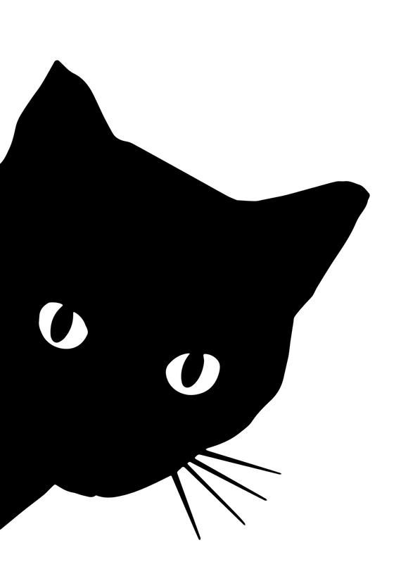
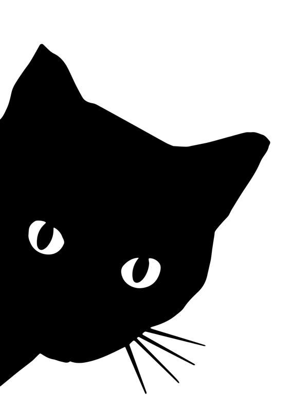
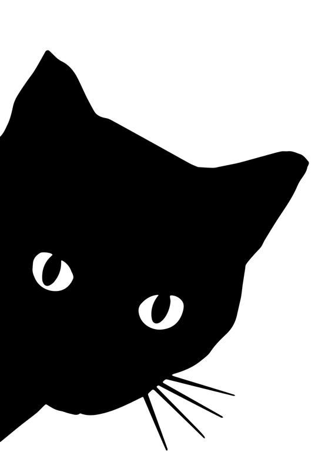
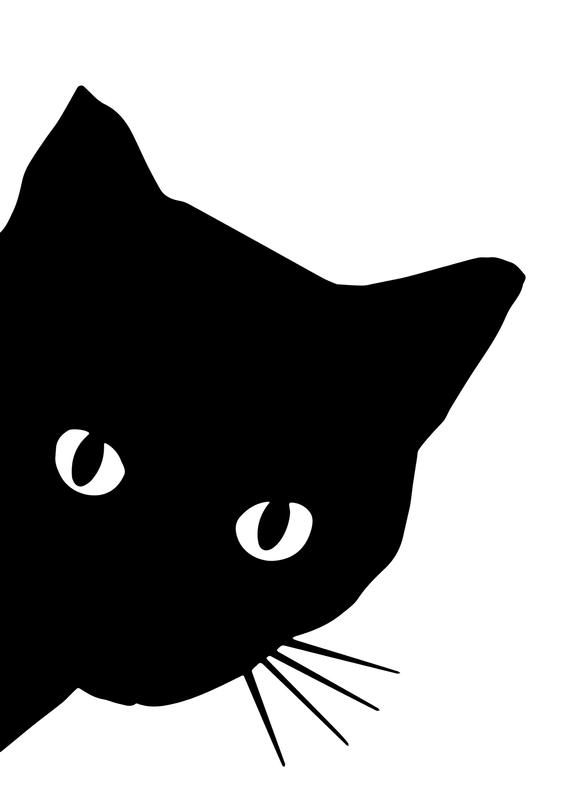

Lo, behold the cat, a creature of most curious contradiction! With fur as soft as a noble's cloak, yet a heart wild as the fiercest tempest. They prance like lords, ruling over their domain with a mere flick of the tail, only to be undone by the humble box, where they declare, "Verily, I shall fit!" Yet, when night falls, these noble beasts become mad sprites, dashing through the halls as if chased by unseen phantoms, only to return at dawn, curled in slumber as if nothing had passed. Thus is the cat, both regal and absurd, the true ruler of the household!